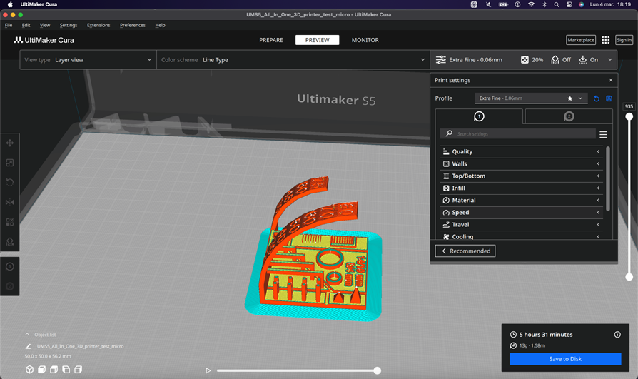
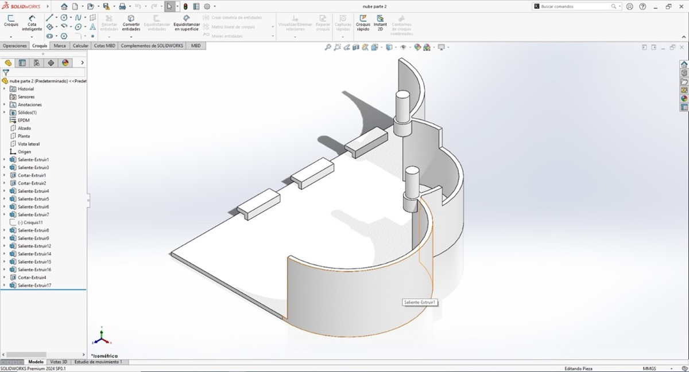
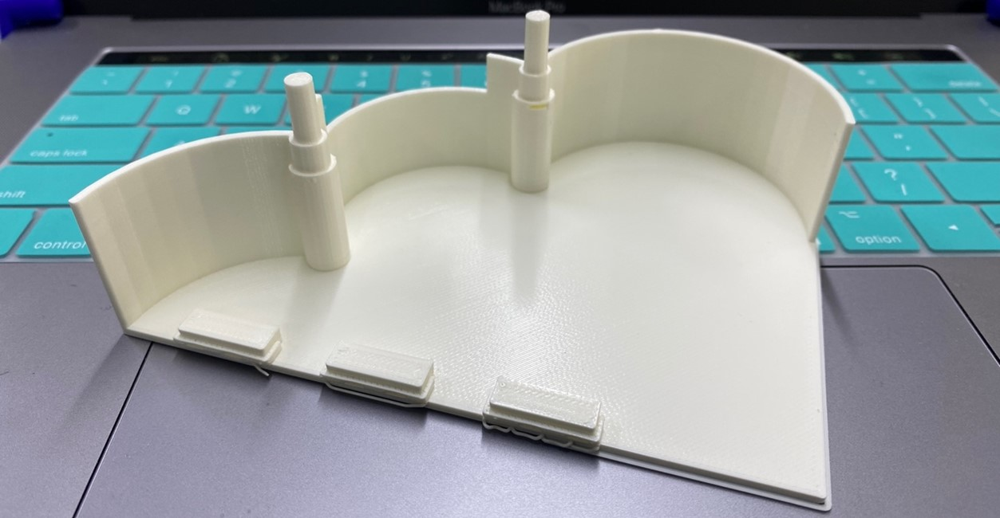

Welcome to Week 5
3D Scanning and Printing.
Now, let's learn about 3D scanning and printing, at Continental University we have different 3D printers, however the main one is the Ultimaker S5, we will see some specifications of this machine.
| PRINT VOLUME | 330 x 240 x 300 mm (13 x 9,4 x 11,8 in) |
|---|---|
| LAYER RESOLUTION | 0.25mm nozzle 60-150 microns, 0.4mm nozzle 20-200 microns, 0.8mm nozzle 20-600 microns |
| SUPPORTED MATERIALS | PLA, PLA PRO, Nylon, ABS, CPE, CPE+, PC, TPU 95A, PP, PVA, Breakaway and third-party materials |
| PRINTER DIMENSIONS: | PRINTER DIMENSIONS: 495 x D 585 x H 780 mm (W 19,5 x D 23 x H 30,7 in) |
For the tests I will show the steps that are carried out in the 3D CURA software and how we obtain the result of each test
- 3D printer Ultimaker S5
- Ultimaker Cura
- PLA Ultimaker
The first step was to know the cura software:
First we’ll make a test print, we are going to print: “All In One 3D Printer test” made by Majda107. You can review his work, Here. (https://www.thingiverse.com/thing:2975429)
When we click on Slice, the software transforms the solid into a layer scheme.
We can also review the characteristics of printing layer by layer, useful to perceive errors or defects that come from the design.

Now it's time to print our test, we save the file on a pendrive and go to the printer.
After completing the test, we have drawn some conclusions. As the angle increases, layers begin to descend, and the piece shows signs of deformation.
This phenomenon becomes apparent at a 45-degree angle and becomes noticeable at 50 degrees. Therefore, as the inclination increases, additional supports will be required.
Furthermore, it is evident that the layers remain intact within a 5mm distance; however, beyond this threshold, additional supports will be necessary.
Upon measuring the external dimensions, we observe an excess of approximately 0.18mm compared to the ideal measurement.
Therefore, since the issue does not stem from the flow, I have adjusted the software parameter for horizontal expansion.
The horizontal expansion was decreased by 0.09, accounting for 0.09 on each side as the expansion occurs bilaterally. Consequently, the total error measures 0.18 when evaluated.
Additionally, I printed a test cube to check the circular fit. I performed this test using an expansion setting of 0.09.
Additionally, with a horizontal expansion of -0.09, the pieces measure accurately with a margin of error of +/-0.01 and the sockets fit together impeccably, with slight friction.
Now I will proceed to make a print of one of the pieces designed for my final project.
Additionally, the 3D model should be exported in STL format. Open the 3D model using Cura software and modify certain settings. Initially, enable supports and set the support angle to 50 degrees.
Also, once the printing process is complete, we allow the base of the printer to cool down, and then we carefully use a spatula to remove the piece.
We have to remove the supports.
I leave all the designs and files about 3D printing here.
3D Scanning
Now, let's learn about 3D scanning and printing, at Continental University we have a 3D scanning, is the Capture 3D. We will need the following requirements
- 3D Scanner
- An object (yes, an object that we want to scan)
- Blender
I chose the model of a Model of the left cerebral lobe.
Without delay, we proceed to scan our object using a scanner equipped with a rotating base. The base rotates a specific number of degrees to capture data. This process is repeated until a full revolution is completed, allowing us to gather data from all angles of the object.
We configure the number of rotations and exposure, the more scans the greater the quality and quantity of details.
Once this procedure is configured we continue to scan the object, I leave you a small video of the process:
Now the scanning process is finished, we export in stl to be able to clean the solid that we want to obtain and we will do it in the Blender program
With the scan result in STL we have the following:
We remove all excess and rotating base:
Exporting this work in STL format is crucial for 3D printing, but we must also perform some finishing touches such as joining sections, smoothing surfaces, adding volume to certain areas, and so forth.
And this is the result:
I leave all the designs and files about 3D scanning.
See you next Week.